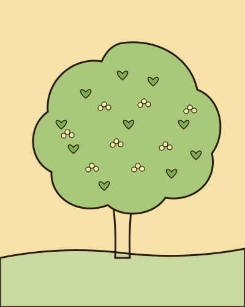
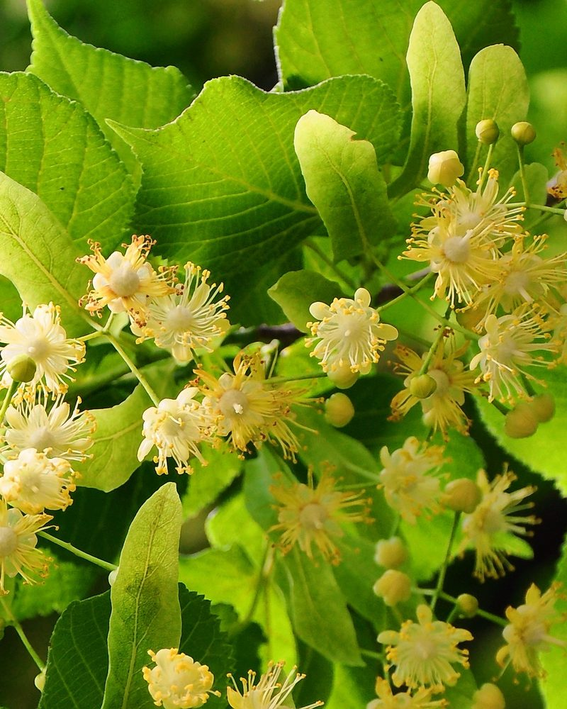
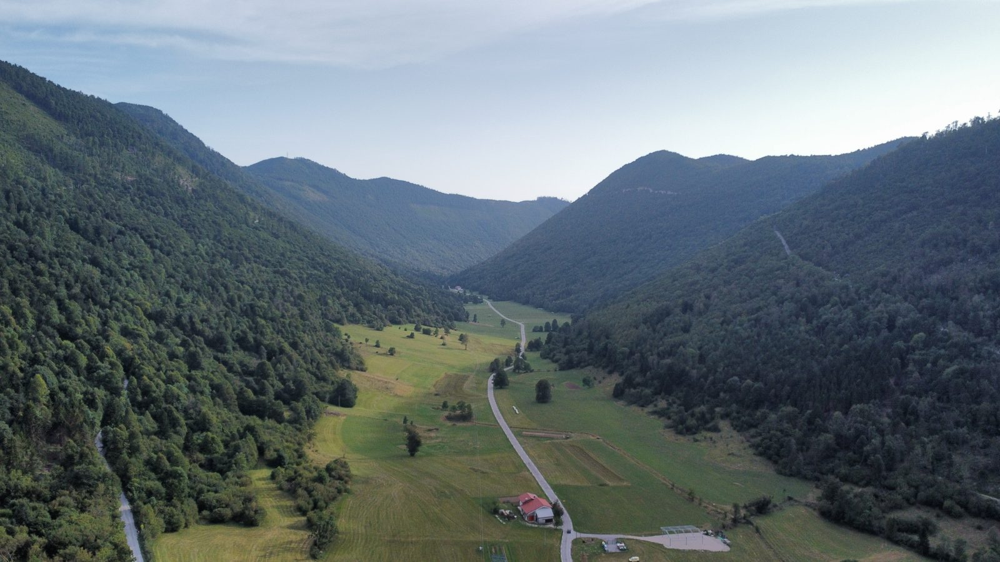
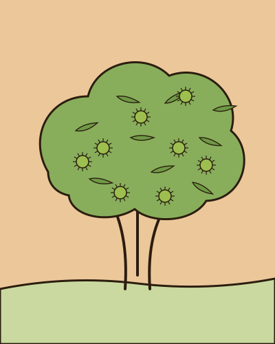
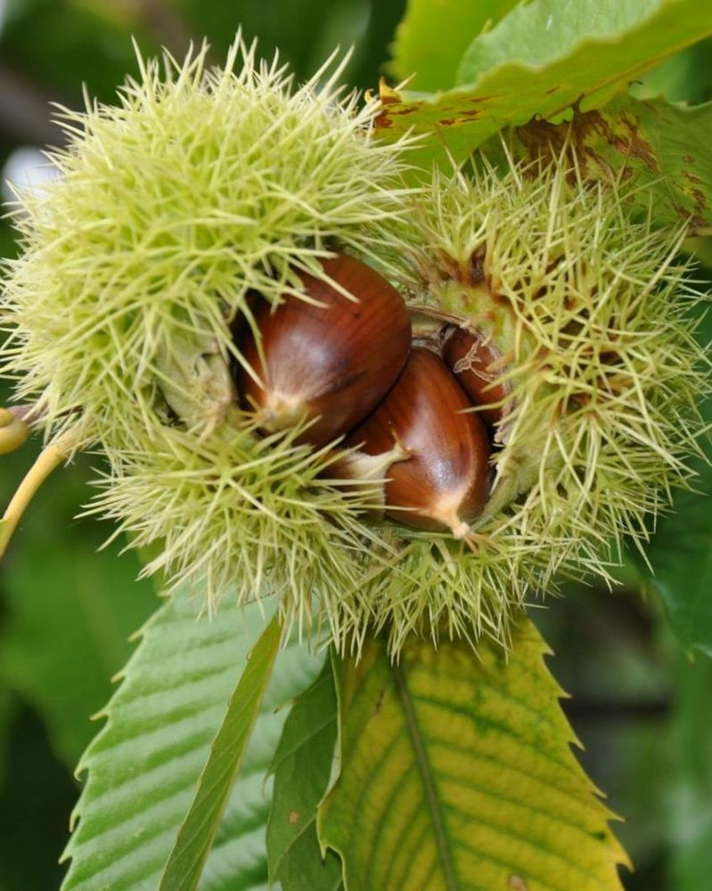
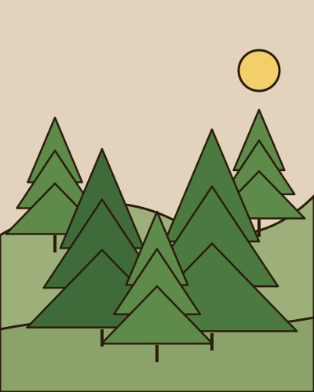
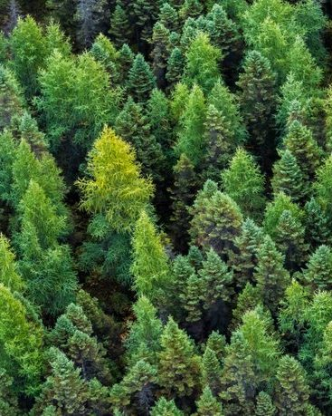
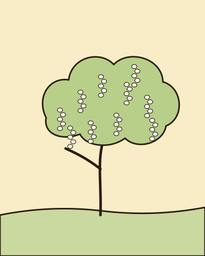
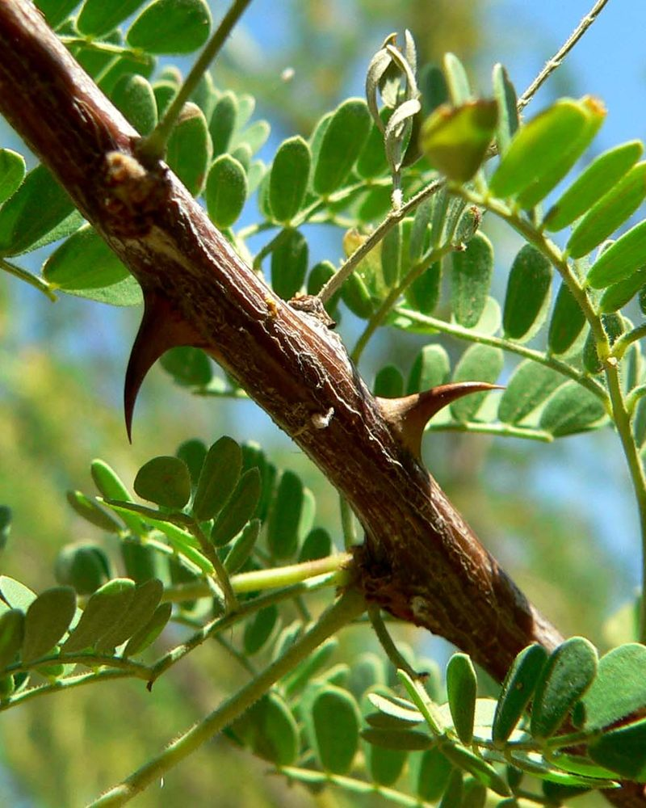

Lipov med
Nežen in aromatičen, z blagim cvetličnim okusom.
Naše čebele nabirajo nektar v neokrnjeni naravi Čepovanske doline. Med točimo ročno, v majhnih serijah in brez dodatkov.

Vsaka sorta ima svojo sezono. Ko kozarcev zmanjka, počakamo na naslednjo letino.


Nežen in aromatičen, z blagim cvetličnim okusom.


Temen in močan, z značilnim rahlo grenkim okusom.


Bogat, temnejši med z intenzivnim okusom.


Svetel, tekoč in posebno sladek.
Čebelnjak stoji sredi travnikov in gozdov Čepovanske doline, daleč od intenzivnega kmetijstva.
Satje odkrivamo in točimo sami. Med samo precedimo — ničesar ne dodajamo in ga ne segrevamo.
Med prevzamete pri nas v Čepovanu ali se dogovorimo za dostavo.
Pišite nam prek obrazca spodaj ali pokličite na [TELEFON]. Dogovorimo se za prevzem v Čepovanu ali za dostavo.
[ODGOVOR — npr. da, po vsej Sloveniji; poštnina [CENA] €, pri naročilu nad [ZNESEK] € brezplačno.]
Kristalizacija je naraven proces in znak pravega medu. Kozarec postavite v toplo vodno kopel (do 40 °C) in med bo spet tekoč.
Pravilno shranjen med — na suhem in temnem mestu, v zaprtem kozarcu — ostane užiten več let.
Seveda, po predhodnem dogovoru. Pokažemo vam panje in pripravimo pokušino vseh sort.
Čepovan 76, 5253 Čepovan, Slovenija
Pogled z ulice — tako izgleda naša hiša.
Iz Nove Gorice vozite v smeri Ajdovščina / Col.Sledite oznakam za Čepovan.
V vasi poiščite hišno številko 76.Hiša je na levi strani ceste.
Prepoznate nas po rumeni čebelarski tabli pred hišo.Parkiranje je možno ob cesti.
Orientacijska točka: Čepovan leži v Čepovanski grapi. Tabla z imenom vasi vam bo potrdila, da ste na pravem mestu.